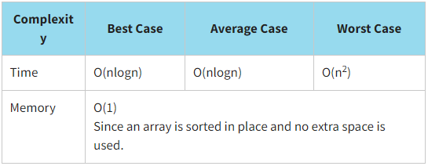
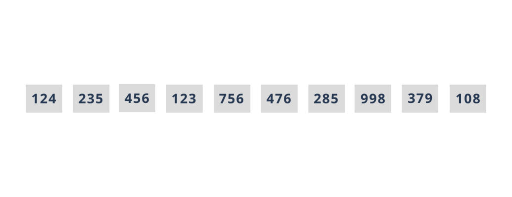

Quick Sorting
Quicksort sort is one of the "divide and conquer" algorithms. It works by recursively repeating the following steps:
- Select a key index and split an array into two parts by it. There are many ways to do this, random or rightmost (i.e. the last) element, for example.
- Move all elements greater than the key to the right side of the array, and all elements less than the key to the left side. The key element is now in the correct position - it is larger than any element on the left and smaller than any element on the right.
- Repeat the first two steps until the array is completely sorted.
Quicksort is not adaptive and not a stable sort.
Quicksort is significantly faster than other O(nlogn) algorithms, because its inner loop can be efficiently implemented on most data structures, and in most real-world data, it is possible to make design choices that minimize the probability of requiring quadratic time.
Let us sort our array of library cards using the quicksort. Recall that the values of library cards are {124,235,456,123,756,476,285,998,379,108}.
Look at the program implementation of the quicksort.
JavaScript realisation
function partition(arr, left, right) {
let i = left - 1;
let key = arr[right];
for (let j = left; j <= right; j++) {
if (arr[j] < key) {
i += 1;
const temp = arr[j];
arr[j] = arr[i];
arr[i] = temp;
}
}
const temp = arr[right];
arr[right] = arr[i + 1];
arr[i + 1] = temp;
return i + 1;
}
function quickSort(arr, left, right) {
if (left < right) {
const keyIndex = partition(arr, left, right);
quickSort(arr, left, keyIndex - 1);
quickSort(arr, keyIndex + 1, right);
}
}
const initData = [124, 235, 456, 123, 756, 476, 285, 998, 379, 108];
console.log('Initial array:', initData);
quickSort(initData, 0, initData.length-1);
console.log(`Sorted array:`, initData);
The result:
Initial array: [ 124, 235, 456, 123, 756, 476, 285, 998, 379, 108 ]
Sorted array: [ 108, 123, 124, 235, 285, 379, 456, 476, 756, 998 ]
You should choose the quicksort when:
- a fast sorting is desired
- there are no limits on memory usage or they are not very flexible
click here or here to see a more detailed explanation of the quicksort.